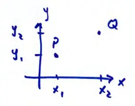
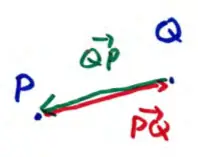

13.1 - 13.4 Review of Vectors
\( P(x_1, y_1), \quad Q(x_2, y_2) \)
vector from \( P \) to \( Q \):
\[ \vec{PQ} = \langle x_2 - x_1, y_2 - y_1 \rangle \]\[ = (x_2 - x_1)\vec{i} + (y_2 - y_1)\vec{j} \]

destination \( x \) or \( y \) minus starting \( x \) or \( y \)
for example,
\( P(1, 2) \quad Q(3, -5) \)
\[ \vec{PQ} = \langle 3-1, -5-2 \rangle = \langle 2, -7 \rangle \]
- 2 "steps" right
- 7 "steps" down
notice \( \vec{QP} = -\vec{PQ} \)
\[ \vec{QP} = \langle 1-3, 2 - (-5) \rangle = \langle -2, 7 \rangle \]
minus reverses direction

higher dimensions, same idea